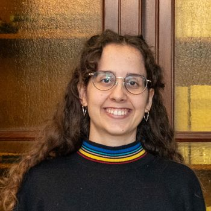
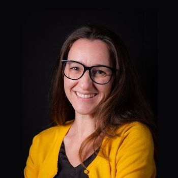
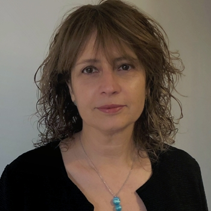
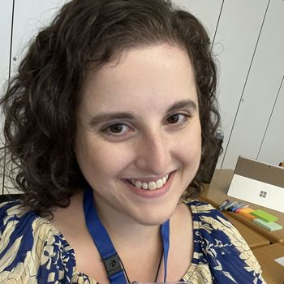

Organizers
-

Ludovica Piro (main contact)
Politecnico di Milano, Italy
ludovica.piro@polimi.itLudovica Piro is a PostDoc researcher at Politecnico di Milano, specializing in Conversational User Interfaces and web accessibility. She has a multidisciplinary background having obtained a master degree in Communication Design and a PhD in Computer Science. Her work explores the intersection of conversational interaction and accessible web browsing.
-

Heloisa Candello
Inteli, Brazil
Heloisa Candello is an Associate Professor at Inteli, and worked as a Senior Research Scientist for more than 10 years in IBM Research. She is specializing in Conversational User Interfaces and responsible AI. Her work explores the design and evaluation of ethical, engaging AI interactions, with contributions published in top HCI venues and patented innovations in conversational systems. She has organized numerous ACM (CHI, CSCW, CUI, IUI) workshops and serves as a steering committee co-chair of the CUI conference series. Heloisa will serve as the web chair for this workshop.
-

Maristella Matera
Politecnico di Milano, Italy
Maristella Matera is a full professor of Computer Engineering at Politecnico di Milano and leads the Human-Centric Interactive Technology (HINT) Lab. She has 25+ years of experience in HCI research, with contributions at the intersection of user interface design and web engineering. Her current research interests focus on AI technologies for multimodal systems, with an emphasis on ensuring that emerging technologies are aligned with human needs and values. The impact of her research on society and inclusivity has been recognized by two Google Awards for research on Society-centered AI (2023 and 2025).
-

Christine Murad
Department of Systems Design Engineering, University of Waterloo, Canada
Christine Murad is a Post-Doctoral Fellow in the SPIRL lab at Carleton University, and a Research Associate at the University of Waterloo, in the Technologies for Aging Gracefully lab. Christine is currently based in Waterloo, Ontario (Canada). Christine earned her PhD (2024), MSc (2019), and her Honours B.Sc in Computer Science from the University of Toronto. Christine’s research involves exploring the design of human-centered AI, with a focus on conversational voice interfaces and the development of design heuristics and tools to assist in conversational voice interface design. Christine is a founding member of the ACM Conversational User Interfaces (CUI) Steering Committee since its inception in 2019.